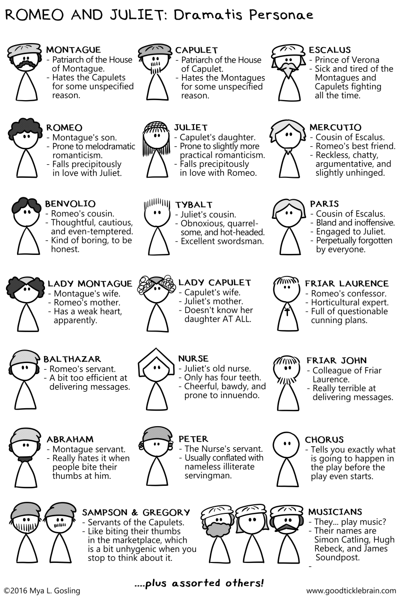

Supporting file: 02_SUPPORTING_FILES_BY_UNIT/04 - Unit 3 Graphic Novels and Shakespeare/Act I Scene I-03f79a6524.mp4
Original package path: contentservice_objects/68ae0749-c92a-4696-9f9e-457b7d53c81f_latest/hd.mp4
Reading Graphic Novels
The following Prezi presentations identify the key features of graphic novels and will help you effectively read and analyze this type of text.
The following videos are also helpful in knowing how to read graphic novels effectively. The videos may cover some of the information in the Prezi above, but are a little more straight forward than reading through a lot of text.
Using the links below, get to know who William Shakespeare was. You will be asked to respond to some research questions in your assignment.
The video below is pretty lengthy but very good:
Did You Know?!
Women were not allowed to be stage performers, so young male actors had to disguise themselves in order to perform female roles.
(this link opens in a new window/tab)
Before you begin reading the play, you need to know that all of Shakespeare’s plays are divided up into 5 Acts, and each Act is further broken up into Scenes.
|
Act I |
|
|
Act II |
|
|
Act III |
|
|
Act IV |
|
|
Act V |
|

(this link opens in a new window/tab)
In English 10-2, you are expected to comprehend what is happening in a Shakespeare play. The play you will be studying is Romeo & Juliet. You will be expected to sign out a copy of the graphic novel from the school (either cover version works).
If you are unable to access a copy of the graphic novel, you can also complete the study using the online animated comic. Advance forward to access the video.

his link opens in a new window/tab)
Supporting file: 02_SUPPORTING_FILES_BY_UNIT/04 - Unit 3 Graphic Novels and Shakespeare/Act I Scene I-03f79a6524.mp4
Original package path: contentservice_objects/68ae0749-c92a-4696-9f9e-457b7d53c81f_latest/hd.mp4
Supporting file: 02_SUPPORTING_FILES_BY_UNIT/04 - Unit 3 Graphic Novels and Shakespeare/Act I Scene II-fd2dbc7220.mp4
Original package path: contentservice_objects/71793542-35c7-4980-bf9e-0bfac106ce46_latest/source.mp4
Supporting file: 02_SUPPORTING_FILES_BY_UNIT/04 - Unit 3 Graphic Novels and Shakespeare/Act I Scene III-9e6bfc9510.mp4
Original package path: contentservice_objects/4fddd552-3c02-45b2-8486-dde67896645a_latest/source.mp4
Supporting file: 02_SUPPORTING_FILES_BY_UNIT/04 - Unit 3 Graphic Novels and Shakespeare/Act I Scene IV-53c0740bdb.mp4
Original package path: contentservice_objects/1bb7fbd4-796e-4dc1-97dd-fd0735c97508_latest/source.mp4
Supporting file: 02_SUPPORTING_FILES_BY_UNIT/04 - Unit 3 Graphic Novels and Shakespeare/Act I Scene V-0b25e9ffc9.mp4
Original package path: contentservice_objects/1c7fa2c6-2142-43ad-a079-68680d7429f8_latest/source.mp4
Supporting file: 02_SUPPORTING_FILES_BY_UNIT/04 - Unit 3 Graphic Novels and Shakespeare/Act II Scene I-2fcac6d39b.mp4
Original package path: contentservice_objects/f37b24aa-77d6-4527-a269-ef2331160b8a_latest/source.mp4
Supporting file: 02_SUPPORTING_FILES_BY_UNIT/04 - Unit 3 Graphic Novels and Shakespeare/Act II Scene II-796ae9b03a.mp4
Original package path: contentservice_objects/d105d5ef-045c-4acf-b4db-37786ab92cce_latest/source.mp4
Supporting file: 02_SUPPORTING_FILES_BY_UNIT/04 - Unit 3 Graphic Novels and Shakespeare/Act II Scene III-36c739169c.mp4
Original package path: contentservice_objects/9e149753-0305-494c-aa1f-0675c8aa84e2_latest/source.mp4
Supporting file: 02_SUPPORTING_FILES_BY_UNIT/04 - Unit 3 Graphic Novels and Shakespeare/Act II Scene IV-35c5df0e91.mp4
Original package path: contentservice_objects/eb6b1a52-6b57-42a0-8eb0-bfafb5a2e6e4_latest/source.mp4
Supporting file: 02_SUPPORTING_FILES_BY_UNIT/04 - Unit 3 Graphic Novels and Shakespeare/Act II Scene V-7da59b106c.mp4
Original package path: contentservice_objects/f78bdb8a-987a-4711-bd4a-68f15bec139d_latest/source.mp4
Supporting file: 02_SUPPORTING_FILES_BY_UNIT/04 - Unit 3 Graphic Novels and Shakespeare/Act II Scene VI-6ce43c05ff.mp4
Original package path: contentservice_objects/b4eca55f-1fef-458d-9bcf-8e2b30d766b2_latest/source.mp4
Supporting file: 02_SUPPORTING_FILES_BY_UNIT/04 - Unit 3 Graphic Novels and Shakespeare/Act III Scene I-6658eacc79.mp4
Original package path: contentservice_objects/1da9a97b-7dad-48a3-85ec-5930d6566178_latest/source.mp4
Supporting file: 02_SUPPORTING_FILES_BY_UNIT/04 - Unit 3 Graphic Novels and Shakespeare/Act III Scene II-ef222cfb8d.mp4
Original package path: contentservice_objects/287777f1-07f8-4f46-aec8-47ad56e3af43_latest/source.mp4
Supporting file: 02_SUPPORTING_FILES_BY_UNIT/04 - Unit 3 Graphic Novels and Shakespeare/Act III Scene III-2bcc0d4675.mp4
Original package path: contentservice_objects/0a3a14c9-f048-4c68-a710-6a9b0dca8730_latest/source.mp4
Supporting file: 02_SUPPORTING_FILES_BY_UNIT/04 - Unit 3 Graphic Novels and Shakespeare/Act III Scene IV-05cd230836.mp4
Original package path: contentservice_objects/77980f4b-86d2-4b89-910c-a7cab933ac6a_latest/source.mp4
Supporting file: 02_SUPPORTING_FILES_BY_UNIT/04 - Unit 3 Graphic Novels and Shakespeare/Act III Scene V-d22762480f.mp4
Original package path: contentservice_objects/7f752f57-db9e-4d3f-a8ee-df2373e18d2f_latest/source.mp4
Supporting file: 02_SUPPORTING_FILES_BY_UNIT/04 - Unit 3 Graphic Novels and Shakespeare/Act IV Scene I-cede6ff83b.mp4
Original package path: contentservice_objects/02b772a0-abdf-4d99-90ff-e7a13a15423a_latest/source.mp4
Supporting file: 02_SUPPORTING_FILES_BY_UNIT/04 - Unit 3 Graphic Novels and Shakespeare/Act IV Scene II-8496ab7d9a.mp4
Original package path: contentservice_objects/470325d8-3ec5-4136-8545-63b0a0e04fe6_latest/source.mp4
Supporting file: 02_SUPPORTING_FILES_BY_UNIT/04 - Unit 3 Graphic Novels and Shakespeare/Act IV Scene III-1656421c6b.mp4
Original package path: contentservice_objects/7e317815-5388-491a-b56a-580e6be6b410_latest/source.mp4
Supporting file: 02_SUPPORTING_FILES_BY_UNIT/04 - Unit 3 Graphic Novels and Shakespeare/Act IV Scene IV-e4d1b07dda.mp4
Original package path: contentservice_objects/29137931-3011-4e31-a8c6-2182eab93ffb_latest/source.mp4
Supporting file: 02_SUPPORTING_FILES_BY_UNIT/04 - Unit 3 Graphic Novels and Shakespeare/Act IV Scene V-7bef5661db.mp4
Original package path: contentservice_objects/fb0adc60-2221-415a-8778-fabc2901c67f_latest/source.mp4
Supporting file: 02_SUPPORTING_FILES_BY_UNIT/04 - Unit 3 Graphic Novels and Shakespeare/Act V Scene I-2ca81d443c.mp4
Original package path: contentservice_objects/e028538a-2758-48bb-9e4b-4d8be3d5ef8f_latest/source.mp4
Supporting file: 02_SUPPORTING_FILES_BY_UNIT/04 - Unit 3 Graphic Novels and Shakespeare/Act V Scene II-7b20d21b77.mp4
Original package path: contentservice_objects/d0270e8c-0c40-432f-92e7-8bdf0cc909fc_latest/source.mp4
Supporting file: 02_SUPPORTING_FILES_BY_UNIT/04 - Unit 3 Graphic Novels and Shakespeare/Act V Scene III-685116b214.mp4
Original package path: contentservice_objects/6d6ab1b3-2cc7-44c5-b934-824c82a74c56_latest/source.mp4